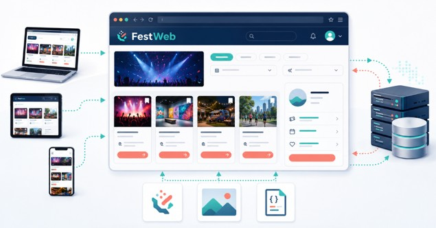

3. Aplicaciones Web
3.1. ¿Qué es una aplicación web?
Una aplicación web es un programa al que se accede normalmente mediante un navegador y que permite consultar información, introducir datos o realizar diferentes acciones. A diferencia de un programa tradicional, en la mayoría de los casos, no es necesario descargar e instalar manualmente la aplicación en el equipo. El usuario accede mediante una dirección web y el navegador descarga los recursos que necesita para mostrarla y permitir la interacción.
Algunos ejemplos de aplicaciones web podrían ser:
- Una tienda en línea Amazon
- Una plataforma educativa Aules
- Un servicio de correo electrónico Outlook
- Una aplicación bancaria Ing
- Un sistema de reservar AirBnb
- Una red social Facebook
- Una herramienta colaborativa Jira
- Un portal de gestión de eventos como FestWeb Cronorunner
Una aplicación web suele presentar las siguientes características:
- Se accede mediante una dirección o URL.
- Utiliza el navegador como entorno de ejecución.
- Puede comunicarse con uno o varios servidores.
- Permite interactuar con información o servicios.
- Puede actualizar su contenido sin reinstalar el programa.
- Puede utilizarse desde dispositivos y sistemas operativos diferentes.
- Suele almacenar información de forma local o remota.
3.2. FestWeb
FestWeb será una aplicación web dedicada a la publicación y consulta de eventos. Una persona usuaria podrá, por ejemplo:
- Consultar los eventos disponibles
- Filtrar los eventos por categoría o fecha
- Acceder a la información detallada de un evento.
- Registrarse o iniciar sesión
- Inscribirse en un evento
- Consultar sus inscripciones.
3.3. Página web, sitio web y aplicación web.
En el lenguaje cotidiano se utilizan frecuentemente como sinónimos los términos página web, sitio web y aplicación web. Sin embargo, no representan exactamente lo mismo:
- Página web: es un documento individual al que se puede acceder mediante una dirección concreta. Puede contener desde textos, imágenes, vídeos o elementos interactivos.
- Sitio web: Un sitio web es un conjunto organizado de páginas y recursos relacionados que comparten un mismo dominio y finalidad común. Puede contener, por ejemplo, en FestWeb, una página de inicio, listado de eventos, detalle de un evento o información de contacto. Cada una es una página diferente, pero todas forman parte del mismo sitio web
- Aplicación web: Es un sitio web en el que la interacción y el procesamiento de información tienen un peso importante. No se limita a proporcionar y que el usuario lea información, sino que puede realizar acciones como buscar, filtrar, introducir datos, realizar una compra… FestWeb se considera una aplicación web porque no se limitará a publicar información sobre eventos. Permitirá buscar, filtrar, registrarse, inscribirse y gestionar información.
| Concepto | Descripción | Ejemplo en FestWeb |
|---|---|---|
| Página Web | Documento individual | Detalle de un evento |
| Sitio Web | Conjunto de página relacionadas | Todo el portal entero |
| Aplicación Web | Sitio con interacción y procesamiento | Búsqueda, acceso e inscripción |
Pregunta
¿Un periódico digital es un sitio web o una aplicación web? ¿Cambiaría la respuesta si permite iniciar sesión, personalizar las noticias, guardar artículos y publicar contenidos?
3.4. Aplicaciones web estáticas y dinámicas
Las aplicaciones y páginas web también pueden clasificarse según la forma en que generan y actualizan su contenido.
- Un contenido es estático cuando se entrega al navegador prácticamente tal como se encuentra almacenado en el servidor. Si varias personas solicitan el mismo recurso, normalmente reciben el mismo contenido. Por ejemplo: una página de presentación o la información de contacto. Qué una página sea estática no significa que no pueda tener estilos, animaciones o algún comportamiento sencillo. Significa que su contenido principal no se genera específicamente para cada petición o usuario.
- Un contenido es dinámico cuando puede generarse, modificarse o actualizarse según determinados datos o circunstancias. Por ejemplo, el contenido puede depender de la persona que ha iniciado sesión, la información almacenada en una base de datos, los parámetros de búsqueda o las acciones realizadas por el usuario.
Actividad opcional
Clasificad como estáticas o dinámicas estas partes de FestWeb:
- Aviso legal
- Listado de eventos
- Perfil personal
- Logotipo
- Historial de inscripciones
- Política de privacidad.
No debemos pensar que toda una aplicación es necesariamente estática o dinámica. La clasificación también puede aplicarse a partes concretas de la aplicación.
Actividad opcional
Escribe dos ejemplos de contenido estático y dos ejemplos de contenido dinámico que podría aparecer en FestWeb. Justifica brevemente cada respuesta
3.5. Aplicaciones web y aplicaciones de escritorio
Una aplicación de escritorio es un programa diseñado para ejecutarse directamente sobre un sistema operativo. Generalmente debe instalarse en el dispositivo antes de utilizarse. Una aplicación web, en cambio, se utiliza normalmente desde un navegador y obtiene parte de sus recursos mediante una conexión de red.
| Aspecto | Aplicación Web | Aplicación de escritorio |
|---|---|---|
| Acceso | Mediante navegador y URL | Mediante un programa instalado |
| Instalación | Generalmente no requiere instalación manual | Normalmente debe instalarse |
| Actualización | Puede realizarse en el servidor | Puede requerir actualizar el programa |
| Compatibilidad | Puede funcionar en distintos sistemas | Puede depender del sistema operativo |
| Conexión | Suele necesitar conexión, al menos inicialmente | Puede funcionar completamente sin conexión |
| Acceso al dispositivo | Limitado y controlado por el navegador | Generalmente más amplio |
| Distribución | Centralizada a través de la Web | Mediante instaladores o tiendas |
| Código | Parte se descarga al navegador | Se encuentra instalado en el equipo |
Las fronteras entre ambos modelos son cada vez menos rígidas. Algunas aplicaciones web pueden instalarse, funcionar parcialmente sin conexión o acceder de forma controlada a determinadas capacidades del dispositivo. También existen aplicaciones de escritorio construidas con tecnologías web.
Ventajas habituales de las aplicaciones web:
- Acceso desde dispositivos diferentes
- Distribución sencilla mediante URL
- Actualización centralizada
- Menor dependencia del sistema operativo
- Facilidad para compartir y colaborar
- Integración con servicios disponibles en Internet
Desventajas habituales de las aplicaciones web:
- Dependencia total o parcial de la conexión
- Restricciones de seguridad del navegador
- Diferencias entre navegadores y dispositivos
- Menor acceso directo al sistema operativo
- Rendimiento condicionado por el dispositivo y la aplicación
- Necesidad de proteger las comunicaciones y datos.
Actividad Opcional
Responde a las siguientes preguntas:
- ¿Qué caracteriza a una aplicación web?
- ¿En qué se diferencia una página, un sitio y una aplicación web?
- ¿Qué significa que un contenido sea dinámico?
- ¿Puede una aplicación combinar contenido estático y dinámico?
- ¿Qué diferencias generales existen enter una aplicación web y una aplicación de escritorio?
- ¿Por qué FestWeb se considera una aplicación Web?
